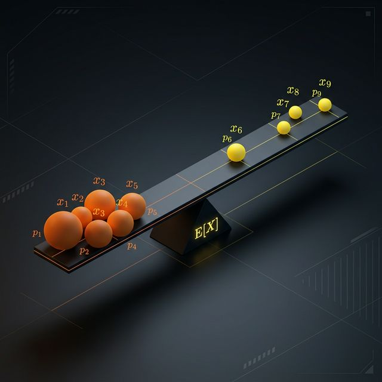

"Bu değişkeni tek sayıyla temsil etsem ne olur?"
Beklenen değer ($E[X]$), dağılımın ağırlık merkezidir — her değeri kendi olasılığıyla tartar, ortaya tek bir temsil noktası çıkar.
Zihinsel Model: Denge Mekanizması
